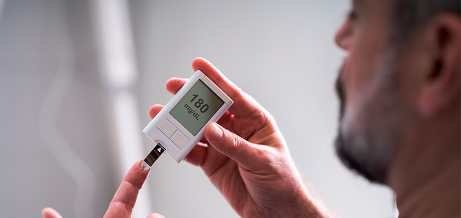

Publirreportaje
Publirreportaje


Hogar Salud Azúcar en la sangre

Por Julián BLANCO |


Los niveles de azúcar en la sangre son una de las principales preocupaciones de las personas con diabetes. La hiperglucemia ocurre cuando los niveles de azúcar en la sangre de una persona superan 180 miligramos por decilitro (mg/dL).
Pero, ¿sabías que los niveles irregulares de azúcar en la sangre pueden tener un impacto negativo grave en la salud y la calidad de vida de los "prediabéticos" que experimentan síntomas sin saberlo?
En este artículo descubrirás 4 secretos principales para reducir tus niveles de azúcar en la sangre.
¿Por qué es importante controlar el azúcar en la sangre?
Mantener los niveles de azúcar en la sangre dentro de los límietes deseados puede ayudarte a evitar problemas de salud asociados con unos niveles altos de azúcar en la sangre.
Con el tiempo, mantener el azúcar en la sangre dentro de los rangos no saludables puede dañar los vasos sanguíneos grandes y pequeños en varios órganos y sistemas, lo que lleva a consecuencias graves que incluyen: discapacidad visual y ceguera, úlceras en los pies, infecciones y amputaciones, insuficiencia renal y diálisis, ataques cardíacos y accidentes cerebrovasculares, enfermedad vascular periférica y daños en el sistema nervioso que provocan dolor y debilidad.
Echa un vistazo a esta asombrosa estadística: hasta el 90% de las personas en Chile tienen unos niveles de azúcar en sangre no regulados. ¿Tienes más hambre de lo normal? ¿O más sed? ¿Sientes dolor en la parte superior del muslo o que tus tobillos y pies están hinchados? Si es así, es muy probable que estés sufriendo las consecuencias de unos niveles erráticos de azúcar en la sangre.
Al mantener los niveles de azúcar en la sangre por debajo de 100 mg/dL antes de comer y por debajo de 180 mg/dL después de comer, puede reducir significativamente el riesgo de efectos adversos por unos niveles irregulares de azúcar en la sangre.
Cómo reducir los niveles de azúcar en la sangre

Estas son las 4 formas principales que te ayudarán bajar los niveles de azúcar en la sangre y reducir el riesgo de complicaciones:
1 Reduce la ingesta de carbohidratos
Se han llevado a cabo estudios que muestran que seguir una dieta baja en carbohidratos y alta en proteínas reduce los niveles de azúcar en la sangre.
El cuerpo descompone los carbohidratos en azúcar que el cuerpo usa como energía. Algunos carbohidratos son necesarios en la dieta. Sin embargo, para muchas personas (especialmente aquellas con diabetes), comer demasiados carbohidratos puede hacer que los niveles de azúcar en la sangre suban demasiado.
Reducir la cantidad de carbohidratos que sueles consumir reducirá la cantidad de picos de azúcar en la sangre.
2 Come los carbohidratos adecuados
Los dos tipos principales de carbohidratos, simples y complejos, afectan a los niveles de azúcar en la sangre de manera diferente.
Los carbohidratos simples se componen principalmente de un tipo de azúcar. Se encuentran en alimentos como el pan blanco, la pasta y los dulces. El cuerpo descompone estos carbohidratos en azúcar muy rápidamente, lo que hace que los niveles de azúcar en la sangre suban rápidamente.
Los carbohidratos complejos están formados por tres o más azúcares que están unidos entre sí. Debido a que la composición química de este tipo de carbohidratos es complicada, el cuerpo tarda más en descomponerlos.
Como resultado, el azúcar se libera en el cuerpo de manera más gradual, lo que significa que los niveles de azúcar en la sangre no suben rápidamente después de ingerirlos. Unos ejemplos de carbohidratos complejos son la avena integral y las patatas.
3 Elige alimentos con un bajo índice glucémico
El índice glucémico mide y clasifica diversos alimentos según lo mucho que hacen subir los niveles de azúcar en la sangre. Los estudios muestran que seguir una dieta con un índice glucémico bajo disminuye los niveles de azúcar en la sangre en ayunas.
Los alimentos con un bajo índice glucémico son aquellos que tienen una puntuación por debajo de 55 en el índice glucémico. Algunos ejemplos de estos alimentos son las patatas, la quinoa, las legumbres, la leche baja en grasa, las verduras de hoja verde, las verduras sin almidón, las nueces y semillas, carnes y el pescado.
4 Toma regularmente suplementos para controlar el azúcar en la sangre
Últimamente, en los medios de comunicación a menudo se mencionan suplementos tales como Insulux para controlar los niveles de azúcar en la sangre, y con una buena razón.
Hecho de ingredientes totalmente naturales y clínicamente probados, se ha demostrado que Insulux es eficaz para estabilizar tus niveles de azúcar en la sangre. Los principales beneficios de tomarlo incluyen el mantenimiento de una función metabólica saludable, la promoción de un metabolismo saludable de carbohidratos y lípidos, así como el mantenimiento de unos niveles saludables de azúcar en la sangre.
Una ventaja adicional es que puede ayudarte a adelgazar, ya que los niveles altos de azúcar en la sangre pueden desencadenar una liberación excesiva de insulina, lo que a su vez evita que el cuerpo queme grasa.
Lo mejor de todo es que es fácil de tomar. Simplemente tómalo 2 veces al día y deja que sus poderosos ingredientes naturales hagan su trabajo. Debido a que está hecho de ingredientes totalmente naturales, no se requiere receta médica para comprarlo.
¿Qué más debo saber?
¿La versión corta? Que si tienes efectos adversos por unos niveles erráticos de azúcar en la sangre, debes comprar Insulux ahora mismo.
¿Necesitas más información? Aquí encontrarás más detalles sobre lo que hace Insulux tan bueno:
Es REALMENTE natural.
Insulux es una solución totalmente natural que incluye una mezcla de
extractos de hierbas. No se requiere prescripción médica.
Seguro que te ayudará.
Insulux tiene una garantía de
satisfacción del 100% , lo que significa que no tienes nada que
perder.
¿Dónde comprarlo?
No te dejes engañar por las imitaciones baratas que aparecen online. Visita su página web para comprar el Insulux original ahora.
Deja de gastar dinero. Toma el control hoy.
Si los niveles altos de azúcar en la sangre te causan frustración y reducen tu calidad de vida, entonces necesitas una mejor solución. Toma el control y compra Insulux .
Promoción especial para nuestros lectores
 Actualización: solo quedan
20 envases disponibles.
Actualización: solo quedan
20 envases disponibles.
La promoción especial finaliza el:

¡Solamente por tiempo limitado
Insulux
 Artículos relacionados
Artículos relacionados

Un producto natural para controlar la presión arterial
Vive una vida más activa con una presión arterial de 80/120
La dieta perfecta para recuperar el control sobre la presión arterial
Insulux
Comentarios 

347 comentarios 
Elena  Top comentarios
Top comentarios
¡Me encanta la sensación que tengo en las piernas ahora! Lo pasé tan mal durante tanto tiempo que ya había olvidado lo que es tener unas piernas sanas.
Responder • Me gusta • Seguir publicación
Tomás •  172 seguidores
172 seguidores
Había estado luchando con unos altos niveles de azúcar en la sangre durante muchos meses y sabía que necesitaba tomar medicación para normalizarlos. Me puse muy contento cuando pude regularlos por mi cuenta.
Responder • Me gusta • Seguir publicación
Julia • 122 seguidores
Ahora puedo caminar por la casa y el jardín con facilidad, pero hace 2 meses no podía hacerlo porque apenas podía levantarme debido al entumecimiento en las piernas.
Responder • Me gusta • Seguir publicación
María • 67 seguidores
¡Tiene un efecto calor y me encanta! Debido a una mala circulación sanguínea, mis manos y mis pies estaban helados todo el día. Ahora ya no me pasa.
Responder • Me gusta • Seguir publicación
Esteban • 49 seguidores
Hace más de 10 años que no jugaba. Nunca pensé que mis piernas estarían lo suficientemente saludables como para volver a hacerlo. Afortunadamente estaba equivocado.
Responder • Me gusta • Seguir publicación
Alba •
38 seguidores
Me siento normal de nuevo. Mis piernas se ven y se sienten mucho mejor que antes.
Responder • Me gusta • Seguir publicación